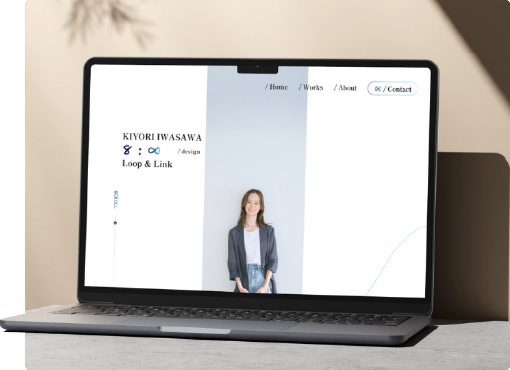

#Website
ポートフォリオ
コンセプト設定から実装まで、いまの自分にできる全てをこのポートフォリオに詰め込みました。“お客さまに長く愛されるデザインを届けたい”
“人と人のつながりを大切にし、長く寄り添える存在でありたい”
そんな想いから「∞（インフィニティ）」と「輪（つながり）」をコンセプトにしています。
[ Category : design, coding ]
View more

KIYORI
IWASAWA
/design
#Website
コンセプト設定から実装まで、いまの自分にできる全てをこのポートフォリオに詰め込みました。“お客さまに長く愛されるデザインを届けたい”
“人と人のつながりを大切にし、長く寄り添える存在でありたい”
そんな想いから「∞（インフィニティ）」と「輪（つながり）」をコンセプトにしています。
[ Category : design, coding ]
View more#Website
仮想のヘアサロンサイトをデザインしました。コーポレートカラーのピンクを基調に、お店の雰囲気や人が感じられるサイトに仕上げました。
[ Category : design, coding ]
View more#Website
コ仮想のカフェサイトを制作しました。レスポンシブ対応で、スマートフォンからPCまで快適に閲覧できるよう設計しています。また、jQueryを活用し、スクロールやボタン操作にアニメーションを取り入れることで、サイト全体にやさしい動きを加え心地よく閲覧できる工夫をこらしました。
[ Category : coding ]
View more岩沢 清里
IWASAWA KIYORI
2025年10月より、地域でお店を営んでいる方や、個人でサービスを提供されている事業者さまを中心に、ホームページやバナー制作を承っております。
お客さまに安心いただけるよう、丁寧なヒアリングと適切な進捗のご報告を心がけながら、一つ一つ誠実に制作を進めてまいります。
制作を開始する前には、まずWEB面談にてご要望や状況をお伺いしております。その上で、ご依頼いただくかどうかをご判断いただけますので、ぜひお気軽にご相談ください。